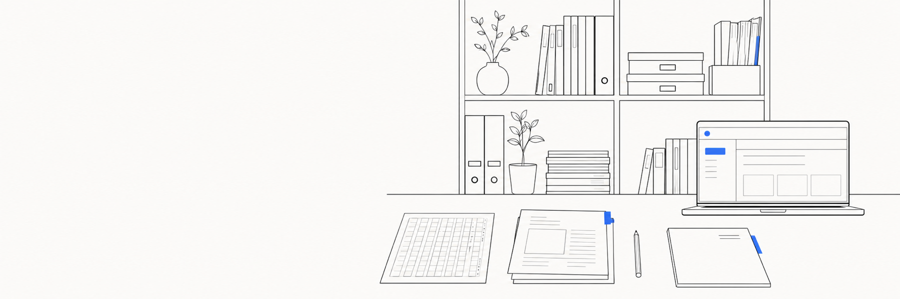
授業と校務を少し軽くする、ツール・プリント・素材・実践のおすそ分け。完成品は、いつも無料です。
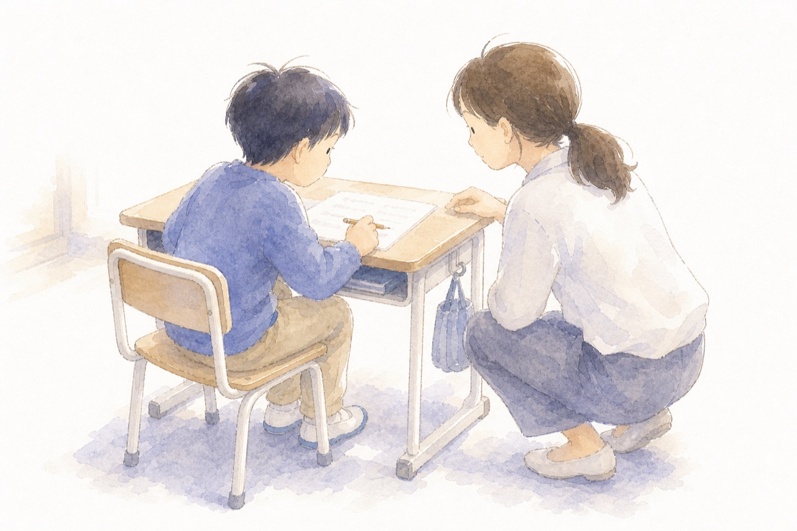
「問題文が読めない・定着しない・手が止まる・ミスが多い」。通常学級の担任のために、国内の研究と公的資料の根拠で支援を考える連載、全35回。パスワードつきの限定読み物です。
くわしく見る →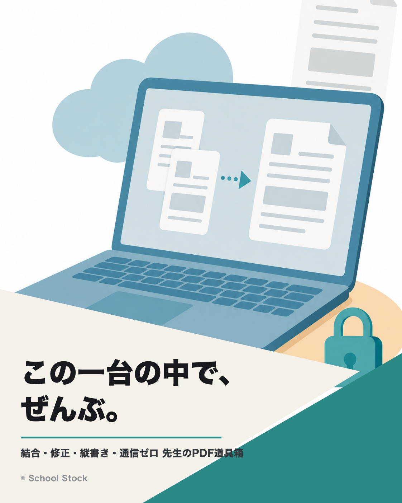
インストール不要・完全無料・通信ゼロ。PDFの結合・修正・縦書きも、児童の情報を外に出さず、このパソコンの中だけで。
くわしく見る →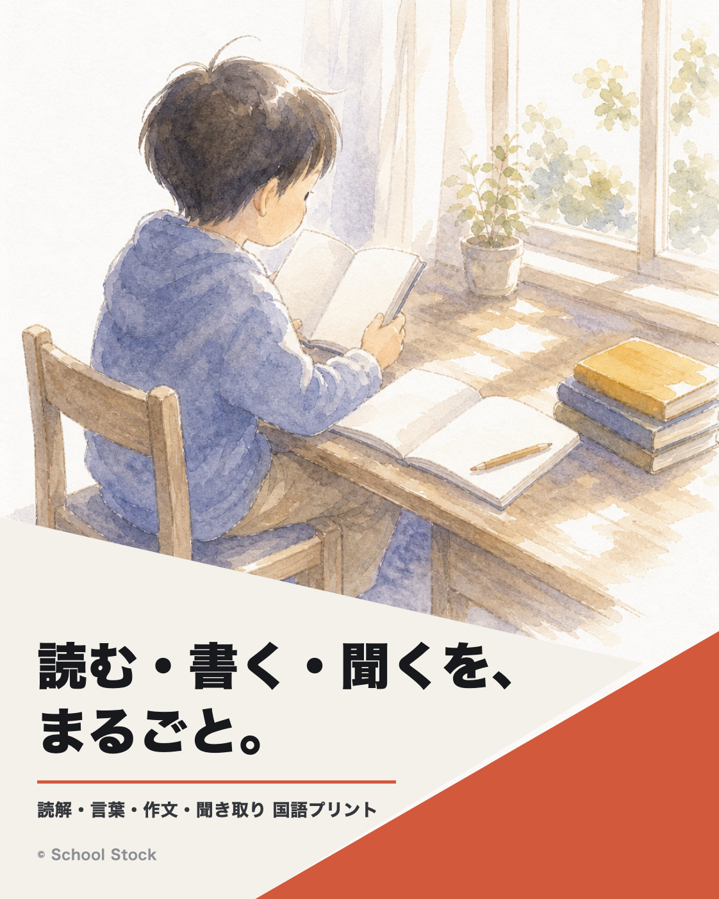
読解・言葉・作文・聞き取りの4分野、全学年ぶん。そのまま印刷して使える、全259枚。検索と解説ページつき。すべて自作・無料です。
くわしく見る →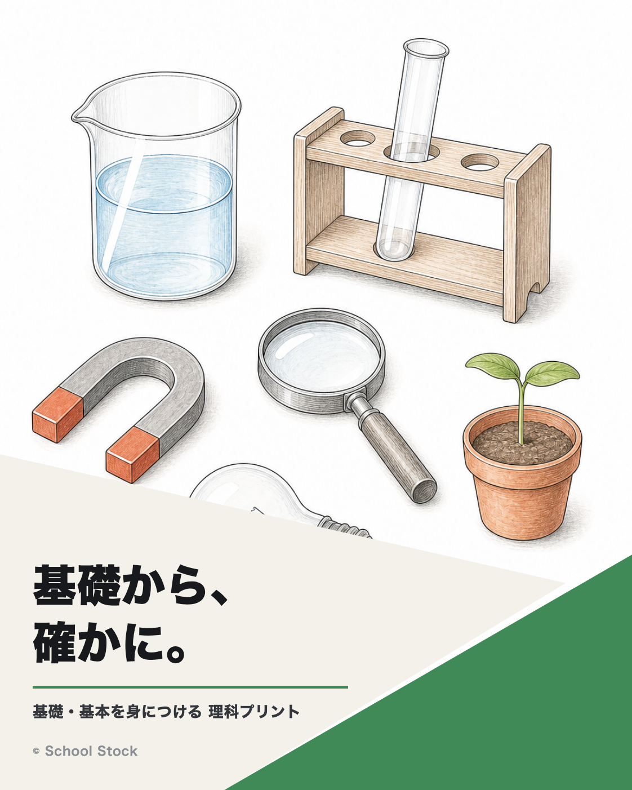
基礎知識・技能をおさえる理科プリント。図やグラフは自作、答えは各PDFの2枚目に赤字で。3・4年から順次、全38枚・無料です。
くわしく見る →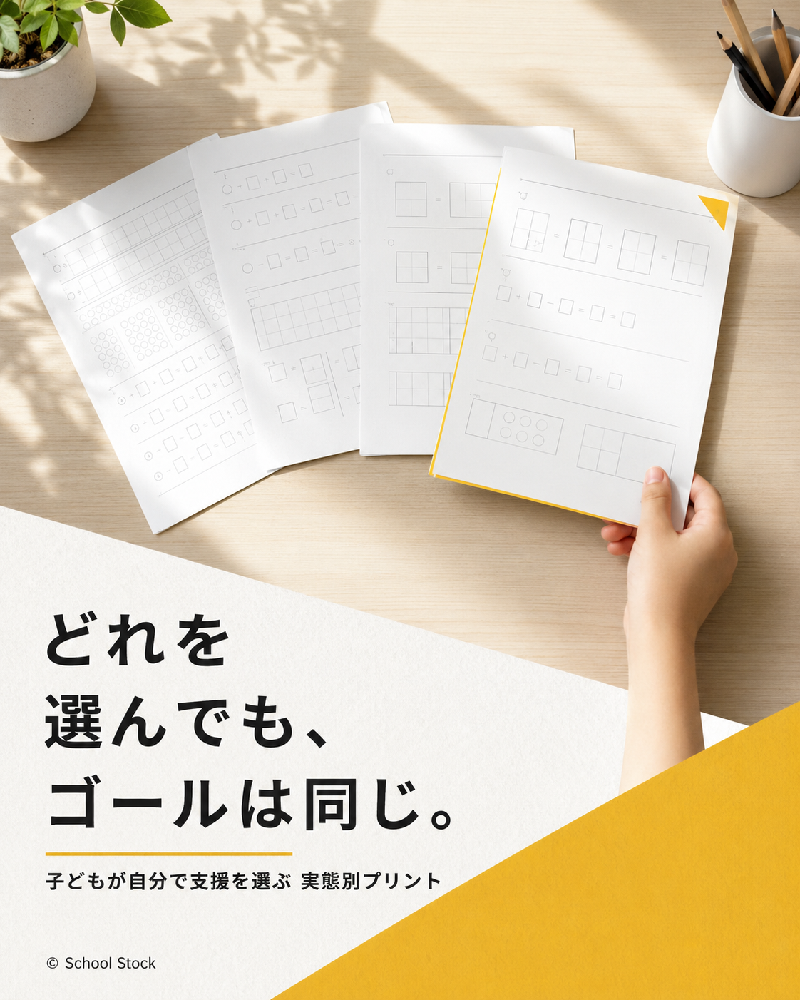
到達目標は全員同じ、変えるのは支援の量だけ。「式と言葉で説明する」レベル1〜4＋解答の5枚セットで、子どもが自分に合う1枚を選べます。全17単元・無料です。
くわしく見る →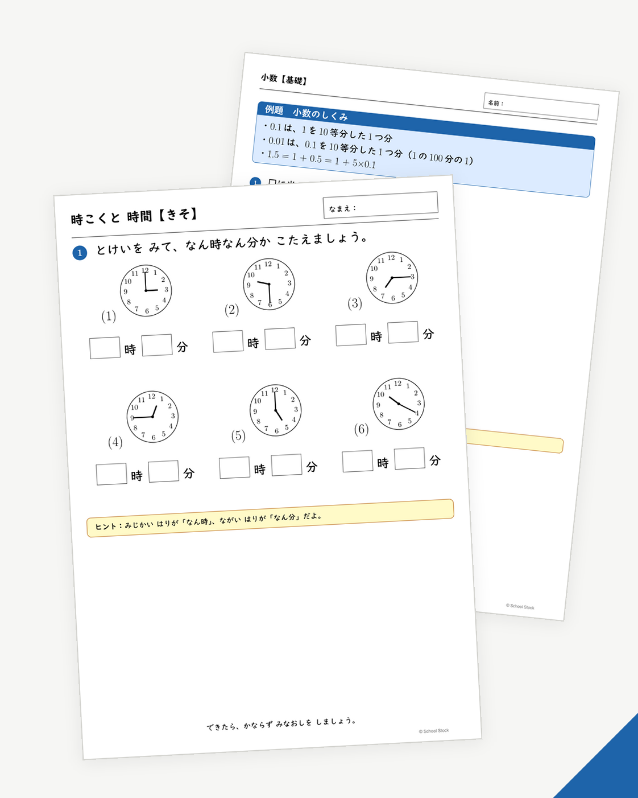
2〜6年の全88単元を、基礎・標準・応用・思考力・まとめの5枚で刷り分け。問題と解答は別PDFで、宿題にもそのまま出せます。啓林館の年間指導計画に沿って作成、無料です。
くわしく見る →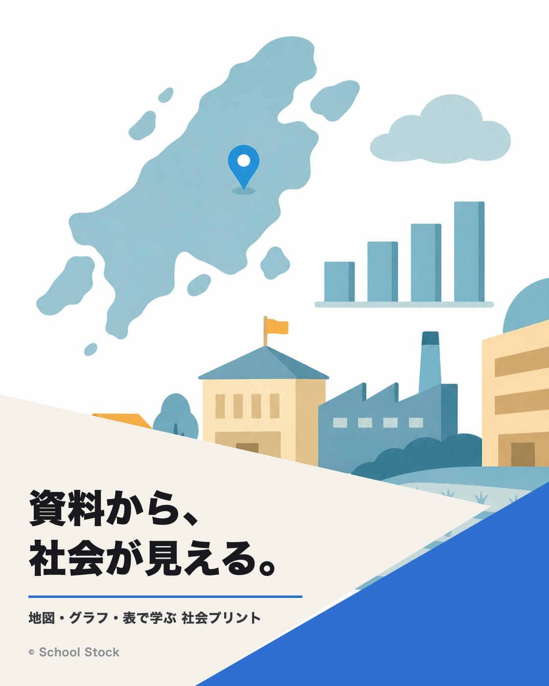
グラフや表を読み取る社会プリント。資料は自作、答えは各PDFの2枚目に赤字で。3〜5年、全12枚・無料です。
くわしく見る →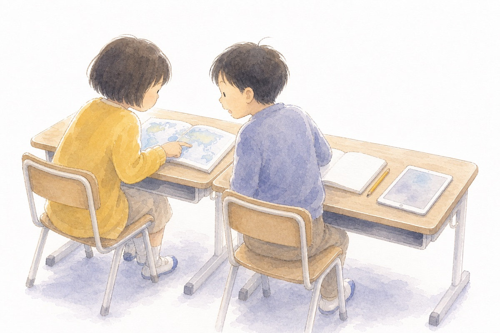
社会科の「つかむ・しらべる・まとめる・いかす」に合わせて、子どもがAIへの聞き方をえらべるプロンプト集。一次情報のリンク集と見学セットつき。小4から、無料です。
ライブラリを開く ↗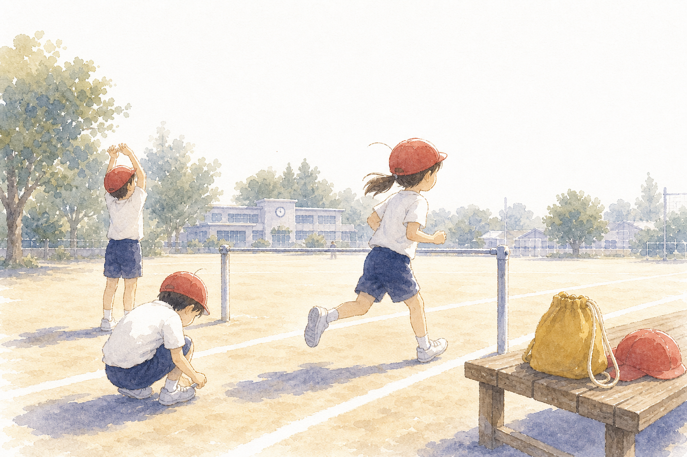
体育の全領域で使える学習カード。単元のはじめに配る「たんげんカード」と、毎時間のおわりに書く「ふりかえりカード」の2本立て。低学年は文字を大きくしています。全31枚・無料です。
くわしく見る →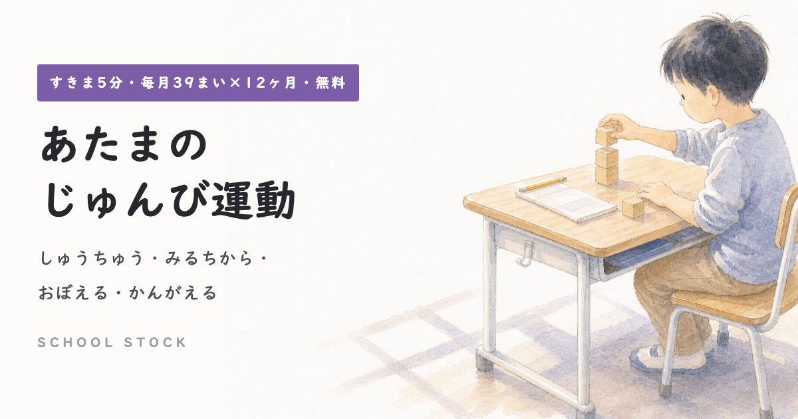
勉強の前に頭をあたためる、すきま5分の認知機能トレーニング。しゅうちゅう・みるちから・おぼえる・かんがえるの4分野を、★1〜3から子どもが自分で選べます。書く量少なめ・得点なし。無料です。
くわしく見る →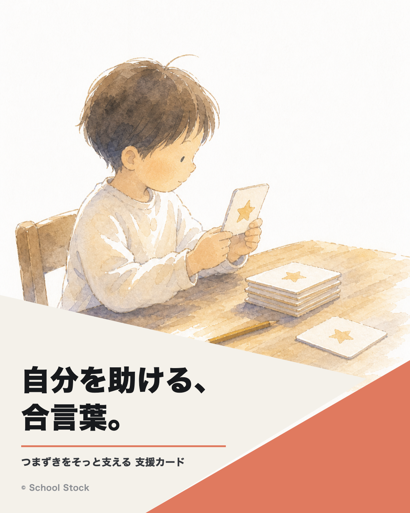
つまずきのある子が「自分を助ける」ための、声に出す合言葉カード。研究で効果が確かめられた支援を、どの教科・場面でも使える形に。全35枚・無料です。
くわしく見る →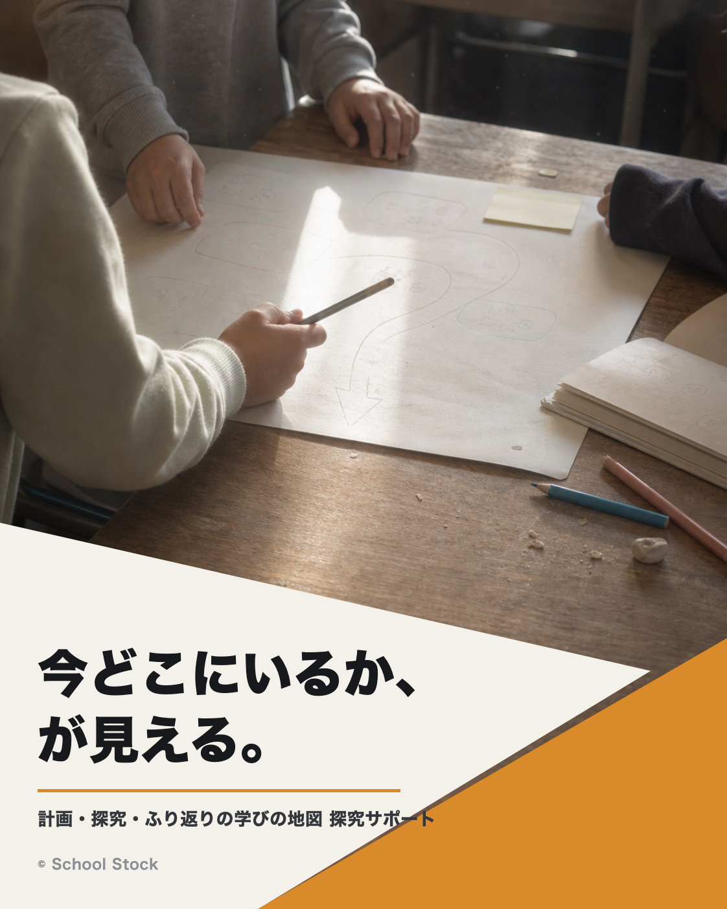
「今、何をしているのか」が全員に見える学びの地図と、計画・リハーサル・振り返りのワークシート、話型カード。理科・社会・総合の問題解決的な学びに。全9枚・無料です。
くわしく見る →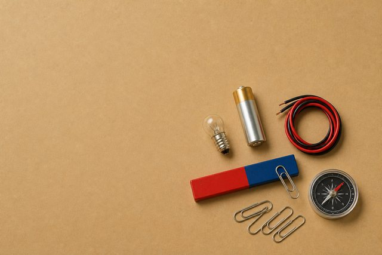
スライドやプリントにそのまま使える、授業のイラストと写真。イラストはカラーと白黒を選べます。理科の単元から順次追加中です。
くわしく見る →授業や校務を軽くする実践アイデア集。ツール・教材・AI活用レシピを、見つけて、持ち帰って、明日の教室で試せます。
くわしく見る →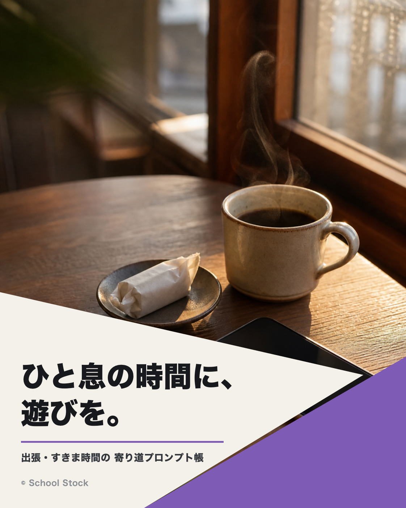
出張のごはん、職員室へのおみやげ、研究大会あとのすきま時間。仕事の「ついで」がちょっと楽しくなる、コピペで使えるGeminiプロンプト10本。
くわしく見る →